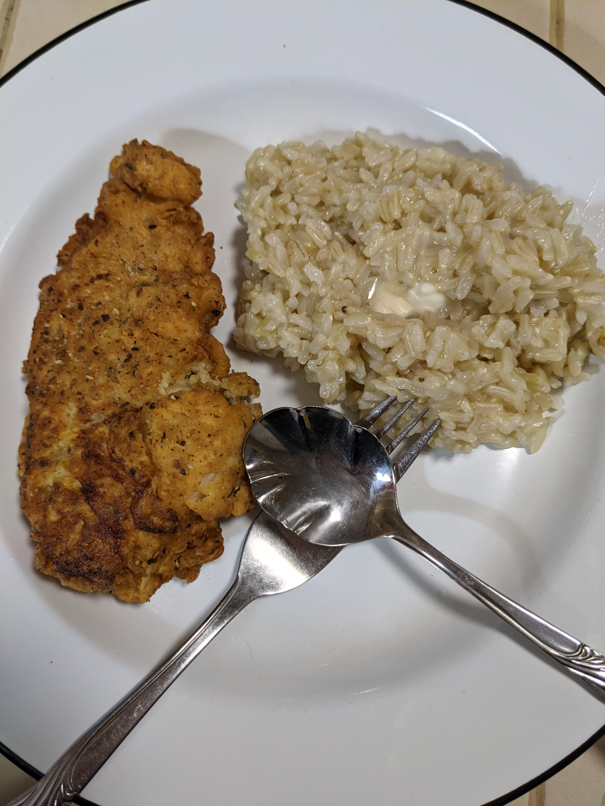

Fried Chicken

Description
Originally I found myself buying bags of mass produced "chicken strips" or boxes of "fried chicken" both had a unique set of disappointment. Eventually experimentation with chicken and oil would bring me to this finished dish, which became my favorite fried chicken go to dish. I use this with breasts, legs, boneless skinless any kind of chicken. Add a side of vegetables or rice and dinner is served! I find the dish to be high on satisfaction and belly filling.
Ingredients
- Chicken
- Flour
- Salt
- Egg & or Milk
- Oil
- Black Pepper
- White Pepper
- Paprika
- Marjoram
- Oregeno
- Cayanne Peppper
- Garlic Powder
Steps
- Mix flour and seasonings together to taste.
- Mix egg with some milk, can be substituted with water and egg or just milk.
- Drench chicken in wet mixture and then flour, lay coated chicken on wire rack over pan to catch drippings.
- Put large fry pan on medium high heat with about a inch of oil.
- Let oil come to heat for about 3-5 minutes your looking for a shimmer on the oil temperature of oil should be around 350F.
- Carefully add chicken to oil, cooking for 4 minutes before flipping. Repeat flip every 4 minutes, depending on thickness of chicken internal meat temp needs to reach 165F.
- Once internal temp is at 165F pull chicken from pan and place on clean wire rack to rest for 5 minutes. Enjoy!